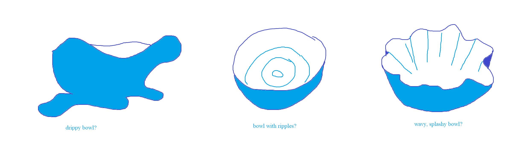

Assignment: design and fabricate a two-part silicone mold, and use it to cast four identical parts in plaster. 3D print a mold for the (silicone) mold.
Assignment: design and fabricate a two-part silicone mold, and use it to cast four identical parts in plaster. 3D print a mold for the (silicone) mold.
I've been using Rhino exclusively for CAD but haven't experimented much with organic shapes. I decided to take this opportunity to explore the "SubD" tools. It was time to make...a wiggly bowl.

As I got acquainted with SubD, I realized that the mechanism for combining shapes was quite different from the world of NURBS. I ended up creating SubD 3D shapes like spheres and rounded cylinders, deleting certain faces to create open shapes, then using Bridge to connect open faces. I found I needed to create shapes with the same number of edges at the junctures of interest; I did this by specifying AroundFaces when creating the objects.
To manipulate shapes, I selected particular faces or edges (Shift+Ctrl+Click) and pushed or pulled them, which also affected adjacent faces and edges. The Smooth command was also useful for this.


To be useful on a flat tabletop, my bowl would need a flat bottom. I concatenated a cylindrical base and hemispherical top, used Fill to close up the top, then used Subdivide to create smaller partitions of that top which I could push in to make a concave shape


I scaled down to a 3 inch diameter bowl 1.5 inches tall to conserve plaster. The resulting bowl was a little thin at the wavy edged top, which was a little worrisone. I wanted my plaster piece to be at least 5mm thick in most places to be sturdy. But I liked the look so much I decided to proceed. (Ultimately, I would end up cutting off some of the delicate wavy edge to ease in mold design, addressing some of this concern.)
With SubD shapes, you can toggle between smooth and flat modes using Tab. I found this helpful for understanding my shape.


I had several options for how to cast these bowls with multi-piece molds. On the left (red) is a design for a longitudinal parting line. I decided instead to go with the design on the right (blue), a latitudinal parting line. One part of the mold creates the bowl exterior shape and has an opening for plaster to be poured in at the foot of the bowl. The other mold creates the interior wavy shape of the bowl. The pink sketches show the corresponding 3D printed molds needed.


The molds are stacked on top of one another and plaster poured in the top. Looking at example molds, I realized this might be atypical, but it seemed okay to me -- a level liquid surface should yield a level bowl bottom. I did sanity checks along the way -- was there an opening to pour in each mold, and an opening for the casted object to escape? Could it be 3D printed without excessive or difficult to remove supports?

To get the curve of the top of the bowl's wavy edge, I used Silhouette in the Top View (InteriorEdges=No). I created a mold boundary at least 1/2 inch thick around all sides. Following this tutorial, I used Line and Sweep2 to generate a parting surface.


With the Sphere and Mirror commands, I made some registration keys. However, extruding this wavy shape and creating a valid, closed, printable mesh proved an elusive task for me! I spent so many hours wrestling Rhino, stubbornly trying to understand how to perfectly maintain both the wavy top edge and the concave bowl shape.


After too many hours of this, I surrendered to my Rhino naivety and made the top of my bowl flat. I lost the battle but gained a printable object after many Boolean operations -- yay!


My slicer settings were fairly standard, save using Concentric Top and Bottom fill patterns. I figured these patterns would show on the finished silicone mold, so they might as well match the curvature of the object. With some possibly suspect setting choices, these printed in 4 hours apiece.


I poured in the silicone and let it cure for 10 hours. I was afraid to bully the wiggly silicone too much, so at first I struggled to remove it from its 3D printed cage, but when I got brave about it, I was able to pry it out without any tearing. It reminds me of a vintage jello mold!


I bound my mold in rubber bands to try to prevent leakage. Each cast took between half an hour and an hour to harden enough for removal.

I now have so many little bowls for my tchotchkes.


Thank you to Emily for recommending this tutorial on mold-making in Rhino.
Source file (.STLs): interior mold, exterior mold